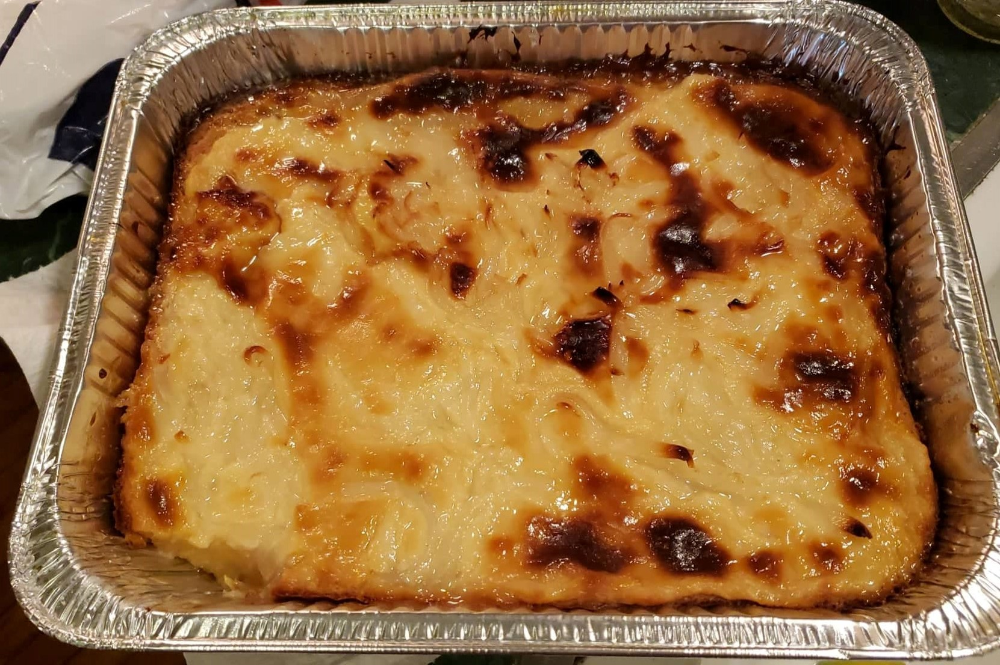

Cassava Cake

Ingredients:
Cake:
- 2 packs Grated Cassava (about 2 lbs)
- 2 cups Coconut milk
- 6 oz Evaporated milk
- 3 Eggs
- 1/4 cup Butter
- 6 tbsp Grated cheddar cheese
- 1/2 cup Condensed milk
- 3/4 cup + 2 tbsp White sugar (14 tbsp)
Topping:
- 2 tbsp Flour
- 2 tbsp Sugar
- 1/2 cup Condensed milk
- 2 tbsp Grated cheddar cheese
- 2 cups Coconut milk
Instructions:
- Preheat the oven to 350 degrees Fahrenheit.
- For the cake batter, combine the grated cassava, butter, condensed milk, evaporated milk, cheddar cheese, sugar, and the 2 whole eggs in a mixing bowl and mix thoroughly.
- Mix in the coconut milk while stirring.
- Grease a baking tray and pour the batter in. Place into the preheated oven and bake for 1 hour.
- For the topping, begin to heat a saucepan on low heat and mix in the sugar and flour.
- Pour in the condensed milk and stir thoroughly.
- While constantly stirring, add in the grated cheese.
- Pour in the coconut milk and stir constantly for 10 minutes or until your desired consistency.
- Pour the topping over the cake and spread evenly.
- Separate the last egg and with a basting brush use the whites to glaze the topping of the cake.
- Preheat the broiler and broil for a couple of minutes until the color turns a light brown.
- Garnish with grated cheddar cheese.